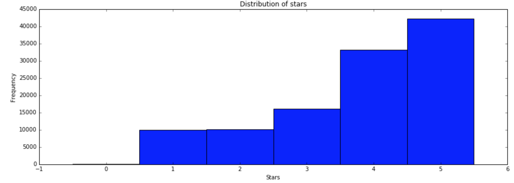
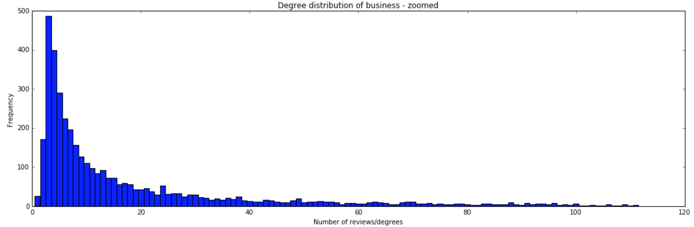
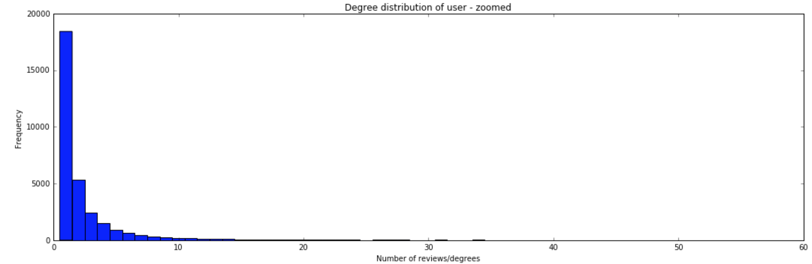

Introduction
This website is about things we discovered by analyzing the yelp data and our early expection can be seen in the video below.
As part of the project, the team chose to analyze Yelp dataset for generating behavioral trends and insights around user reviews, star rating distribution, sentiment analysis and its correlation with the actual star rating provided.
This dataset is based on real reviews on Yelp, and was provided by the company for a data analysis contest. The whole dataset consists of json files: business, user, review, tip, and check-in. As part of our analysis, a network between users and businesses will be constructed, so only the datasets on businesses and reviews will be used as the user ID can be found in the review.
Apart from the users’ names (the dataset is anonymized), you can find every information you may need, here are some examples:
- Business attributes:
- Business attributes:
- Review attrubtes:
- Review attrubtes:
- Business attributes:
- Review attrubtes:
The business map can be found below. Notice how they are distributed strictly on a few cities. Considering the size of the initial dataset (~3Gb), we will focus on only the restaurants in Pittsburgh, PA.
INSERT MAP HERE!!!
As stated before, the user/business based on the reviews will be analysed.
- The first step will be to find a better rating system than only the stars, based on the text of the reviews;
- Then, this score will be used along with similar users’ reviews to find the restaurants a user may like;
- Finally, we will try to identify super-users, that is users who represent the whole community the best: it can help Yelp to get better feedback and focus more on these users.
Our data analysis were done in Python and can be found at our notebook. The notebook will elaborate on what is contained within the datasets and how the code is working.
The original data for this project can be found at dataset challenge and the data which is used in the jupyter notebook can be found at this link.
Designer Templates
  We’ve crafted some handsome templates for you to use. Go ahead and click 'Continue to layouts' to browse through them. You can easily go back to edit your page before publishing. After publishing your page, you can revisit the page generator and switch to another theme. Your Page content will be preserved.
Creating pages manually
If you prefer to not use the automatic generator, push a branch named gh-pages to your repository to create a page manually. In addition to supporting regular HTML content, GitHub Pages support Jekyll, a simple, blog aware static site generator. Jekyll makes it easy to create site-wide headers and footers without having to copy them across every page. It also offers intelligent blog support and other advanced templating features.
Authors and Contributors
You can @mention a GitHub username to generate a link to their profile. The resulting <a> element will link to the contributor’s GitHub Profile. For example: In 2007, Chris Wanstrath (@defunkt), PJ Hyett (@pjhyett), and Tom Preston-Werner (@mojombo) founded GitHub.
Support or Contact
Having trouble with Pages? Check out our documentation or contact support and we’ll help you sort it out.